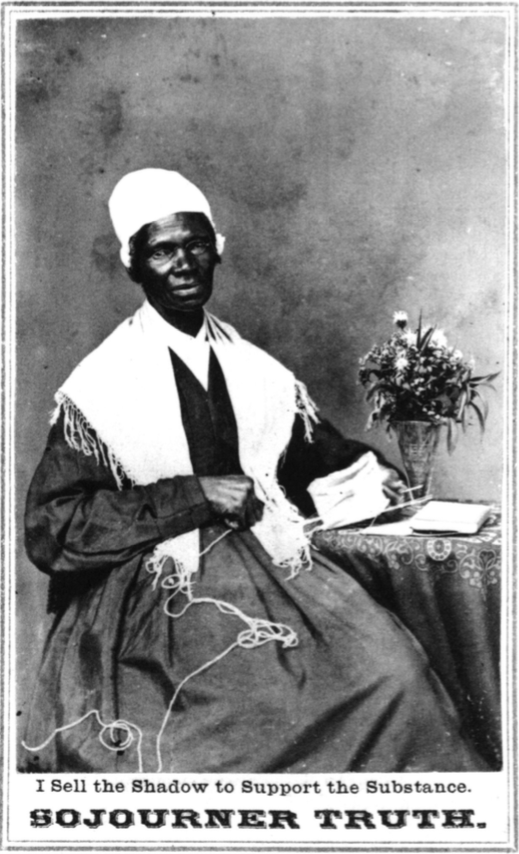

Sojourner Truth was an abolitionist who advocated for woman's rights, universal suffrage, and the rights of African-Americans. She was a powerful and moving speaker known for her passionate speeches to reform the politics of the day. ("The 'Green-Backs of Civilization'", 117). She attempted to achieve a large presence in the public eye through the new technology of photography. Truth used photographs for self-representation, tring to claim an authorized voice and an audience for her work (Wallace 10).
Sojourner truth was both black and a woman, a person with the least amount of influence in 19th century America. Photography was the medium through which she was able to give herself a voice. Her photographs signal self-possession: demonstrating the fact that she is her own person and cannot be owned by another person. In this sense, she used her portraits to resist the all-to-real horrors of slavery.
Like other bourgeois portraits, Truth's cartes de visite and cabinet cards are strongly marked by a bourgeois ideal evoked through setting and props. (The Green-Backs of Civilization, 132)
Her portraits mainly consisted of plain backgrounds with ordinary, domestic props such as yarn and knitting needles. Its possible that she choose to represent herself this way in order to push back against the racist stereotypes of the day, showing her civility that some assumed was not possible for African Americans. Its also possible that this was an attempt to relate to middle-class americans who would have the power to reform that she lacked. ("The 'Green-Backs of Civilization'", 132). Sojourner Truth's use of photography in her portraits exemplifies the power of photography to give individuals a public image, not only the rich and powerful. She was able to use these photographs to shape and use her public image to make a send a message to the American middle class.